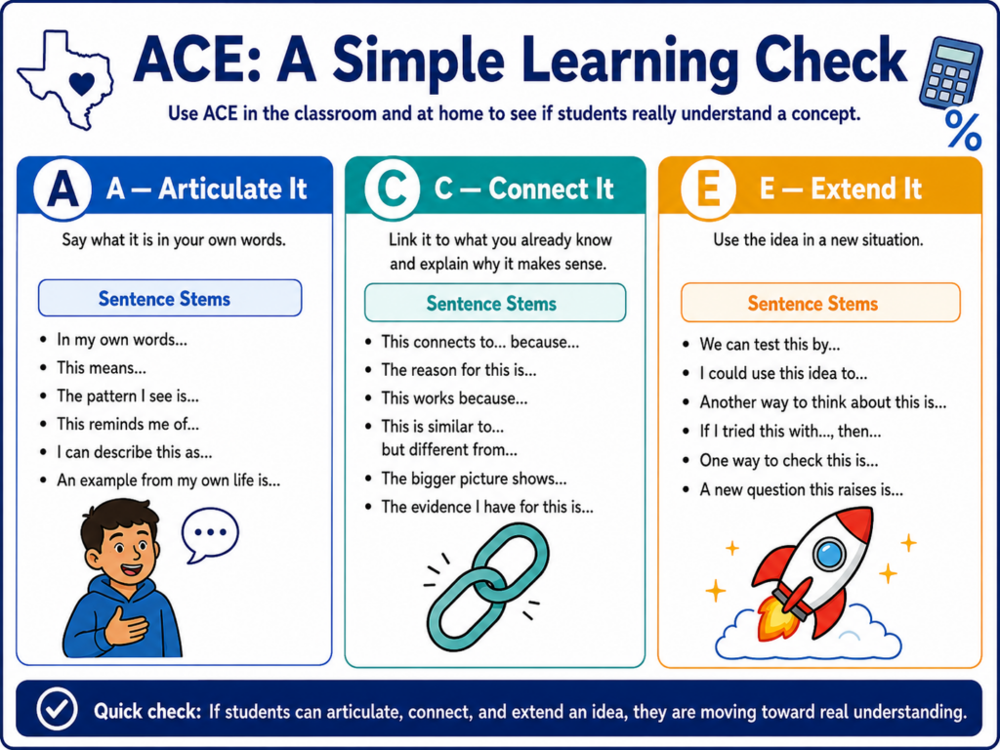
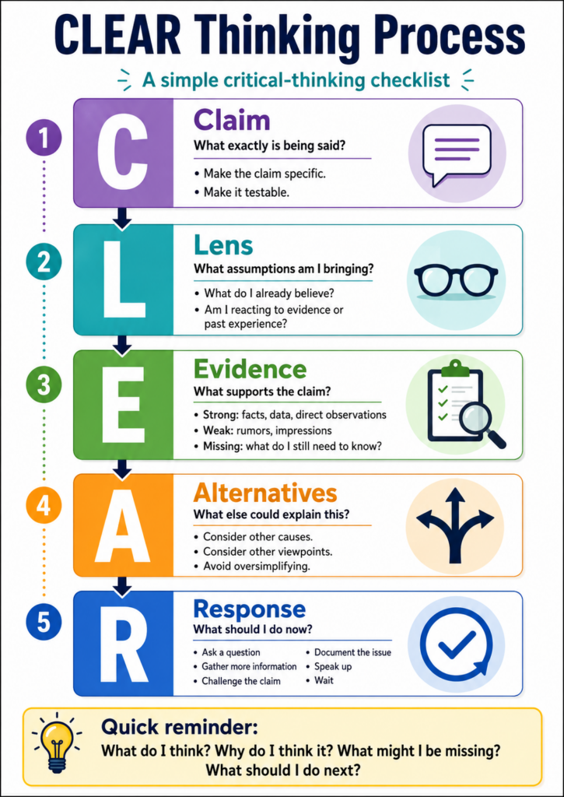

ACE reflection
Ask students to prove they own the idea in three short moves.
Articulate
Say it in your own words. Use something from your life.
Connect
Show how it fits with what you already know. Explain why.
Extend
Use it somewhere new. Try a problem nobody handed you.
 ACE blog
ACE blogUse ACE as a three-line exit ticket or retrieval-practice bellringer.

The first thing is ACE. I would describe it as a simple way to check whether students really own the idea. Articulate means they can say it in their own words. Connect means they can link it to something they already know. Extend means they can use it somewhere new. Tomorrow, this can be as small as three lines on a half sheet, a discussion prompt, or a bellringer before students open their notes.
Critical Thinking Online Breakouts
Use a CTOB when teachers need students to read, reason, and defend answers without a long setup.
Use it when
- You need a ready activity
- Students need practice with evidence
- The class needs something more active than a worksheet
How to frame it
- Read the clues
- Prove the answer
- Explain the thinking
 CTOB link
CTOB linkPick one breakout, give teams 10 to 15 minutes, and ask them to justify one answer with evidence.

The second thing is a ready resource. I would point people to CTOBs because they are practical and easy to explain. Students read clues, make decisions, and prove answers from the evidence. That makes them useful for a short station, a warm-up, or a small group task. The important part is not the lock. The important part is the reasoning that leads to the lock.
Build a student-ready study kit
Use one reusable Gen AI prompt to turn lesson content into practice students can actually use.
 Study kits
Study kitsStart with one lesson, one topic, and one clear output. Then verify accuracy before giving it to students.
The third thing is a professional practice: a reusable Gen AI prompt. I like study kits because the output is concrete. A teacher can use this with a lesson they already have, then ask for vocabulary, retrieval questions, a misconception check, and a short practice task. The caution is simple: verify the content before it goes to students. Gen AI can help draft the practice, but the teacher still owns the accuracy.